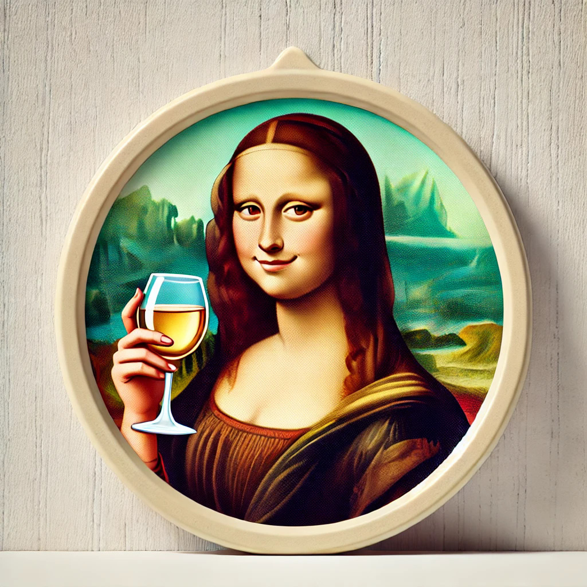

The Mona

A customizable Raspberry Pi drinking game that lights up your parties—play, expand, and cheer! 🍻
Discover the story!
A customizable Raspberry Pi drinking game that lights up your parties—play, expand, and cheer! 🍻
Discover the story!